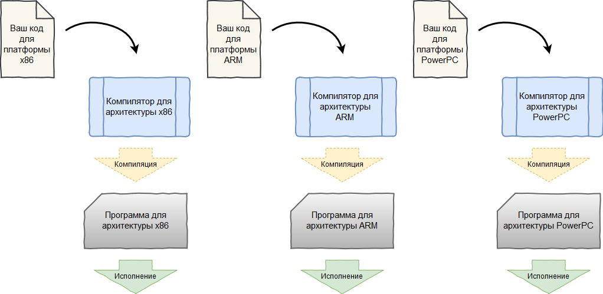
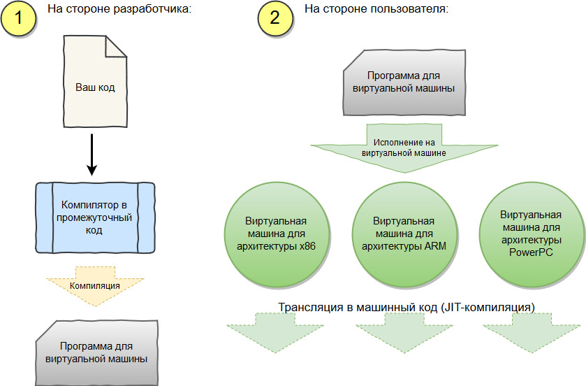

Объектно-ориентированное программирование
Легкое погружение в среду .NET
Содержание лекции
Введение
Чтобы рассказать про платформу .NET, нужно сначала рассказать про Java.
Это были лихие девяностые. Все программировали, как могли. Для каждой архитектуры процессора нужно было писать свою версию программы.
Программа, написанная для одной архитектуры, не работала на другой.
Новый игрок
Разработка кроссплатформенных программ была настоящим адом. Одновременно нужно было поддерживать несколько десятков версий вашего проекта.
Так было продолжать нельзя, и команда талантливых разработчиков из Sun Microsystems решила изменить принцип построения программ.
В 1995 году они выпустили первую версию Java. Это была инновация для того времени.
Концепции
Идея заключалась в том, чтобы обеспечить выполнение программы сразу на всех возможных аппаратных платформах.
Чтобы единожды написанный код был универсальным и мог запуститься где угодно: на домашних компьютерах, вычислительных мейнфреймах, даже на вашей кофемашине.
Для этого они придумали дополнительный промежуточных слой между исходным кодом и конечной скомпилированной программой.
Стандартная компиляция
Компиляция с промежуточным уровнем
Виртуальная машина
Под виртуальной машиной здесь подразумевается запущенный фоновый процесс, эмулирующий искусственно созданную аппаратную платформу.
Компилятор производит "как-бы машинный код", только не для какой-то реальной архитектуры, а для архитектуры виртуальной машины.
Когда на виртуальной машине запускается какая-либо программа, инструкции из этого промежуточного "как-бы машинного кода" преобразуются к инструкциям для той процессорной архитектуры, которая используется на физической машине, и исполняются.
JIT компиляция
JIT (Just-in-Time) компиляция, или динамическая трансляция - это способ выполнения программы, когда машинный код может компилироваться прямо во время её работы.
На практике обычно предкомпиляция происходит во время запуска приложения, а во время выполнения происходит перекомпиляция выбранных участков кода для их оптимизации.
Преимущества и недостатки
Неоспоримым преимуществом JIT-компиляции является постоянная оптимизация получаемого машинного кода, что может серьезно повысить производительность программы, а также отсутствие необходимости в самостоятельном управлении памятью.
Самым значимым недостатком является длительность запуска программы - время, необходимое на предварительную компиляцию. Также на компьютере должен быть запущен дополнительный процесс JIT компилятора.
Продолжение истории
Java сразу начала набирать огромную популярность и захватывать рынок.
В Microsoft в это время разрабатывали новый набор библиотек для их C++. И, наблюдая за подъёмом Java, они решили вместо разработки для C++ создать собственную платформу и новый язык программирования по аналогии c Java, со своей виртуальной машиной и своим промежуточным языком.
И так появился .NET
Microsoft взяли все основные концепции Java, улучшили и построили вокруг них свою платформу. В 2002 году свет увидела первая версия .NET Framework.
Единственное, что он не был кроссплатформенным, а работал только под Windows.
.NET
.NET - фреймворк(набор библиотек) для создания разносторонних приложений под управлением общеязыковой среды исполнения (CLR).
Все компоненты фреймворка(библиотеки) .NET написаны для промежуточного слоя виртуальной машины CLR, что отстраняет их от какого-либо конкретного языка программирования.
.NET Core
.NET Core - более современная, разрабатываемая параллельно, кроссплатформенная версия .NET Framework, с улучшенным компилятором и переработанной средой CLR.
Основные языки для .NET
Специально для работы с .NET, Microsoft был разработан объектно-ориентированный язык программирования C#, функциональный язык F#, а также адаптирован старичок Visual Basic .NET.
И прочие, и прочие
Поскольку платформа .NET является прослойкой на уровне виртуальной машины, любой язык программирования может полноценно работать с ней. Необходим лишь специальный компилятор в её промежуточный язык.
И таких реализаций языков программирования для .NET целое множество, начиная с древнейшего COBOL, до популярных Python и Ruby. Даже есть (была*) официальная версия Java от Microsoft для .NET - J#.
С полным списком можно ознакомиться здесь.
Каркас платформы
В основе .NET Framework лежат 2 главные составляющие:
- Общеязыковая среда исполнения (CLR)
- Библиотека классов .NET (FCL)
CLR
Общеязыковая среда исполнения CLR (Common Language Runtime) является сердцем платформы .NET.
Это та самая виртуальная машина, которая исполняет промежуточный код (JIT-компиляция), управляет распределением памяти, обеспечивает безопасность типов, обработку исключений и сборку мусора.
В общем это то, что отвечает за выполнение программ на .NET.
Промежуточный язык
Промежуточный язык, используемый в CLR, описан в спецификации Common Language Infrastructure (CLI).
Чтобы язык программирования был совместим с платформой .NET, он должен компилироваться в этот промежуточный язык.
Управляемый код
Управляемым кодом называют исходный код программы, который будет выполняться в рамках CLR, т.е. код для среды .NET.
Однако в рамках программы для .NET можно использовать и другие вызовы, например, функции операционной системы (Win32 API), которые под управление CLR не подпадают. Такие части кода называются неуправляемым кодом.
Сборка мусора
За счёт того, что программы для .NET выполняются внутри другого процесса (CLR), исчезает необходимость в самостоятельном управлении памятью. Этим занимается сама среда CLR.
CLR выполняет такой процесс, как сборка мусора - автоматическое освобождение неиспользуемой памяти.
Она отслеживает ссылки на выделенную память в вашей программе, и, когда они перестают существовать, освобождает ресурсы.
FCL
Библиотека классов FCL (Framework Class Library) - это огромный набор библиотек .NET, включающий в себя масштабную объектно-ориентированную систему типов, компоненты и средства для разработки всевозможных приложений, начиная с консольных программ, и заканчивая корпоративными веб-приложениями.
BCL
В основе всех программных компонентов .NET лежит стандартная система типов, которые представляет собой набор базовых классов. Этот набор классов называется Базовой библиотекой классов BCL (Base Class Library).
Компоненты FCL / Технологии .NET
Библиотеки FCL разделяются на компоненты, предназначенные для разных технологий в рамках .NET:
- ADO.NET
- ASP.NET
- WCF
- WPF
Схема .NET
Вот так Microsoft описывают взаимодействие .NET со всей системой:

.NET Core
Если раньше .NET был ориентирован на Windows, сейчас Microsoft одумались, и всеми силами развивают кроссплатформенный .NET Core, а обычный .NET потихоньку устаревает.
Перспективные направления
- ML.NET
- Unity
- UWP
- Xamarin